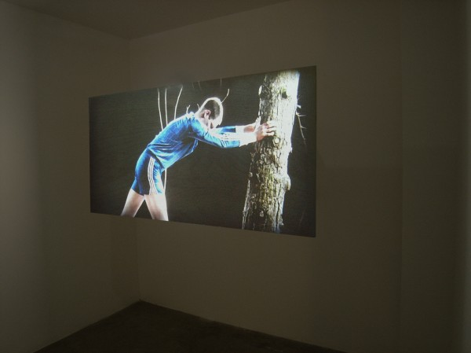
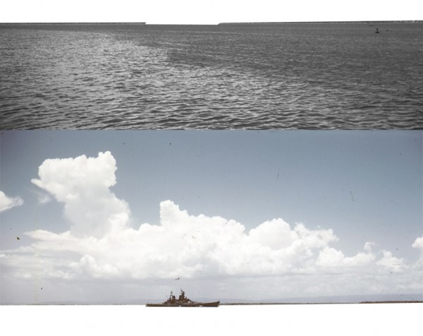

-
E pluribus unum? Of many one at Scaramouche
by Laila Pedro November 29, 2010
I confess that the press release for the Scaramouche gallery’s current exhibition, Of many one, which announces its purpose of ‘bringing together a group of eight young London-based artists,’ made visions of taxidermy-d sharks and unmade beds dance in my head. Roughly 20 years after the height of the Saatchi/YBA phenomenon (‘Sensation’? spectacle?), to code oneself a “Young British Artist” still carries some heavy baggage, and tellingly, they are not all British, these Londoners—this is one of many small details that make Of many one so very much of the here-and-now, with the attendant problems and possibilities.
If Saatchi’s promotion of the YBAs, with their extravagant materials, elaborate installations, prankish bad behavior and (more-than a) whiff of entitlement exemplified the driving, booming, globalizing nineties, Of many one might offer a counterpoint tinged by a Glissantian mondialisation, an artistic praxis that celebrates the local, diverse rapports of difference on an intimate scale.
You have the option, when seeing the exhibit, of reading it as the press release wants you to, as a somewhat convoluted play on Italo Calvino’s If on a winter’s night a traveler, the sort of Borgesian-choose-your-own-adventure-absurdist-chess-game of a book that performs all the hallmarks of a postmodernist literature: self-referentiality, unstable narrative structure, recursive chronology, blurred boundaries between interior and exterior and so forth. It’s a lovely novel and an apt suggestion, but not a necessary one: the conversations between the works speak for themselves, in multiple ways, and it seems best to be wary of such a specific reading anyway.
So, we can push the esteemed Mr. Calvino aside for the moment (or not) and see the works themselves. The first piece in the gallery (and by this I mean the one closest to the front door; one of the strengths of this exhibition is that the pieces are placed in such a way as to make any number of itineraries possible) is Chas Higginbottom’s contemporary “riff” (his word—or the gallery’s) on the idea of the readymade. Comprising elements of the erotic, the confectionary and the mechanical, toying with scale and angle and the gaze, the sculpture/installation displays a kind of witty Almodovar-tinged excess of sex, pathos and consumption. Delightfully tacky neoclassical podiums displaying women’s lingerie balance on what look to be cake-shaped hatboxes; a pair of wheels cowers under a sort of tripod whose topper might have belonged to the Mad Hatter. The almost-tripod suggests an almost-capture of the scene, but it is left unresolved; its comic, sweetly mocking, yet nuanced completion lie in this irresolution. The Mad Hatter visual is a good one, for in many ways this is a sort of polylingual visual and aural (mad) tea party. This confusion of subjects and frames, of the limits of the entity or event, is the common note in these disparate works. In Hans Diernberger’s Kampfbereit, a series of photos of battleships lose their edges, their horizons lose their placement, everything is waiting in an uncertain space, and because it is waiting, it’s in liminal time. Destabilizing the horizon questions not only the divisions of the horizontal/vertical space, but the depth of the image. Likewise, the metaphoric horizons – the limits of vision – are no longer solid.
If space and depth are displaced (or misplaced) in Diernberger’s work, in Rehana Zaman’s Diagram of an Event, the time, as Hamlet said and Deleuze echoed, is out of joint. A diagram of time, reducing four dimensions to the representational two, destabilizes itself, undoing its own order and rationality even as its mode of communication is implicitly described as an attempt to impose order and rationality. It’s an impossible diagram of the intangible.
Laura Morrison’s wet clay sculptures play with limits as well, but her central metaphor is the body rather than the natural world (precisely, the seascape) of Diernberger’s series. A torso emerges from the floor: twisted, oddly directionless, headless. The limits of this body, of its subjectivity, are impossible to determine—into what category of being do we inscribe it? Is it a simulacrum of a person? If so, is it merely a fragment, an idea of a person? Or is it, being of wet clay (no missing the Adamic significance here; the creation’s material indicating its status as creation) closer to the building in which its presented than it is to us, as viewers? Ms. Morrison’s work is purportedly “connecting the line between the body and earth”, but it’s also doing more than that: it’s expanding the subjective relationships to art and opening up multiple potential significations for the body—and, by extrapolation, the subject, the viewer and the work.
As you move toward the back of the gallery (provided you’ve taken my itinerary), you become aware of an arrhythmic, ominous thumping—like a frightening clothes-dryer with sneakers in it. It’s coming, even more unnervingly, from behind a black curtain. Perhaps I’m easily suggestible, but it took me a moment to get up my courage to peek behind the curtain. The simple combination of unidentifiable but ‘dark’ sound and drawn, dark curtain, pull one into an experience of anxiety before one even engages with the work. This highlights the relation between all the pieces, for the installation quietly reaches beyond its own space to interact aurally with everything else in the space. It’s effective and affecting—and particularly interesting once one actually enters the installation. Here, figures slowly move in an arc, holding tree branches aloft, across a video screen. It’s as though they are riding on a wheel and we are catching them at the top of their orbit, a rather unsettling position that suggests that much is going on around and below and behind the frame. Really though, the tree branches moving silently, menacingly, inexorably forward recall nothing so much as Malcolm, Macduff and the Earl of Northumberland marching on Macbeth’s Dunsinane, hidden by the branches of Birnam Wood. I love this image—it’s creepy and menacing and beautiful and familiar all at once. It’s also, seen from the side, and on video, and through the screen of allusion, a masterful exercise in the sort of framing and re-framing, unframing and re-fashioning, or, finally, outright refusal of boundaries that characterizes the whole show. It’s a rare curatorial effort that can take such a delicate web of interactions and, without crushing it, impose a consistent vision, and Erin Sickler has done an admirable job. The title makes one wonder—is there another level of relation here, an Anglo-American joke in naming itself after our motto?